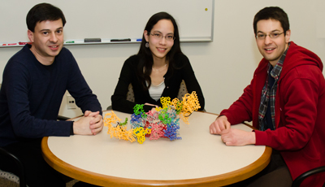

News Archives : 2012 : Structure of the DNA Damage Sensor from Bacterial Nucleotide Excision Repair
by David Jeruzalmi and Danaya Pakotiprapha
February 6, 2012

(L to R) David Jeruzalmi, Danaya Pakotiprapha, and Martin Samuels
DNA damage is a fact of life for all living organisms. Some have estimated that each of our human cells absorbs thousands of damaging events each and every day. Left uncorrected, such damage can lead to permanent, disruptive, changes in the genome, and cause various diseases including cancer. Without an active method of patrolling the genome for damage, and repairing it when found, life on earth would not last very long. Thus, all organisms deploy a panoply of DNA repair pathways. One of these, the nucleotide excision repair (NER) pathway, is unique for its ability to repair a chemically diverse set of lesions that each alters the structure of DNA in profoundly different ways. Conserved throughout evolution, NER involves several major steps: genome scanning, damage recognition, incision, and repair synthesis. Mutations in this pathway give rise to many human diseases including xeroderma pigmentosum, Cockayne syndrome, and trichothiodystrophy. Given the importance of NER to stability of the genome, it is crucial to understand its logic and molecular mechanisms. To this end, we are studying the NER pathway in bacteria where the mechanisms, though complex, are uncomplicated in comparison to analogous pathways in eukaryotes.
The focus of this current study is the complete UvrA-UvrB protein complex, which operates as the DNA damage sensor in bacterial NER. Important progress towards understanding how this damage sensor works was reported online on February 5 in the journal Nature Structural and Molecular Biology by Harvard scientists (Danaya Pakotiprapha, Ph.D. ’08. Martin Samuels, Ph.D. ’11, Koning Shen, ’10, and Johnny Hu, ‘11) led by Professor David Jeruzalmi (MCB). Specifically, these scientists used a battery of structural, biophysical, biochemical, and genetic experiments to decipher and understand the structure and function of the UvrA-UvrB DNA damage sensor. The structure revealed a gondola-shaped device formed out of the four protein components (UvrA2•UvrB2) of the sensor. Approximately 45 base-pairs of DNA can sit in the trough-like compartment where passengers would sit in the gondola. One of the most intriguing discoveries of this current work is that this trough-like compartment of the damage sensor appears ready-made for undamaged DNA; damaged DNA is too distorted to fit into this compartment. This finding stands in contrast to the isolated structure of UvrA (determined in 2008 by Danaya Pakotiprapha working with the groups of David Jeruzalmi and Greg Verdine), which appears to have a surface that can accommodate both distorted damaged DNA as well as undamaged DNA. The clear and important implication of this discovery is that the UvrA-UvrB DNA damage sensor interconverts between these two very different shapes during its patrol of the genome in search for damaged DNA. Jeruzalmi and his team are hard at work to find additional support for this novel and exciting hypothesis.
Read more in nature structural and molecular biology
Read more in HARVARDgazette
[February 6, 2012]